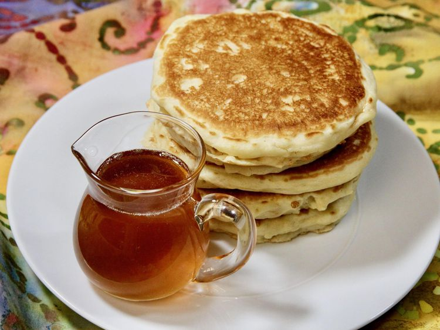

Back to home
Fluffy Pancakes

Description
These fluffy pancakes are a breakfast favorite. This recipe makes light and airy pancakes that are perfect for a weekend brunch or a special breakfast. Serve them with your favorite toppings like maple syrup, fresh berries, or whipped cream.
Ingredients
- Flour
- Sugar
- Baking powder
- Salt
- Milk
- Egg
- Butter
- Vanilla extract
Steps
- Mix the dry ingredients
- Whisk the wet ingredients
- Combine the wet and dry ingredients
- Heat a griddle or skillet
- Pour batter onto the griddle
- Cook until bubbles form and edges are set, then flip
- Serve warm with your favorite toppings